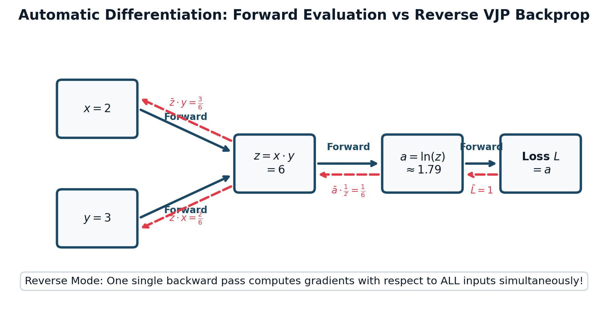

"Calculus is the most powerful weapon of thought yet devised by the wit of man."

Figure 1.2.1: Computational graph for automatic differentiation. The forward pass evaluates intermediate operations from inputs to scalar loss $L$. The reverse pass traverses adjoints in reverse topological order via Vector-Jacobian Products (VJPs), calculating exact gradients for all parameters simultaneously in a single sweep.
— Wallace B. Smith
Machine learning models learn by minimizing an empirical loss function $\mathcal{L}(\mathbf{w}): \mathbb{R}^d \to \mathbb{R}$. In high dimensions ($d = 70 \times 10^9$ parameters), we cannot visualize the loss surface. Calculus provides the mathematical compass that guides us toward the minimum.
For a scalar-valued function $f(\mathbf{x})$, the gradient $\nabla f(\mathbf{x}) \in \mathbb{R}^d$ is the vector of all first-order partial derivatives: $$\nabla f(\mathbf{x}) = \begin{bmatrix} \frac{\partial f}{\partial x_1}, & \frac{\partial f}{\partial x_2}, & \dots, & \frac{\partial f}{\partial x_d} \end{bmatrix}^T$$
Let $\mathbf{u}$ be a unit vector ($\|\mathbf{u}\|_2 = 1$) representing an arbitrary direction in parameter space. The directional derivative $D_{\mathbf{u}} f(\mathbf{x})$ measures the rate of change of $f$ in direction $\mathbf{u}$:
$$D_{\mathbf{u}} f(\mathbf{x}) = \lim_{h \to 0} \frac{f(\mathbf{x} + h \mathbf{u}) - f(\mathbf{x})}{h} = \nabla f(\mathbf{x}) \cdot \mathbf{u}$$By the Cauchy-Schwarz inequality and trigonometric dot-product definition:
$$D_{\mathbf{u}} f(\mathbf{x}) = \|\nabla f(\mathbf{x})\|_2 \|\mathbf{u}\|_2 \cos(\theta) = \|\nabla f(\mathbf{x})\|_2 \cos(\theta)$$Since $\cos(\theta) \in [-1, 1]$, this rate of change is maximized when $\cos(\theta) = 1$, which occurs when $\theta = 0^\circ$ (meaning $\mathbf{u}$ points in the exact same direction as $\nabla f(\mathbf{x})$)! Conversely, it is minimized (steepest descent) when $\cos(\theta) = -1$, pointing in direction $-\nabla f(\mathbf{x})$.
When a function maps a vector to another vector $\mathbf{f}: \mathbb{R}^n \to \mathbb{R}^m$, its first derivatives form the Jacobian matrix $J \in \mathbb{R}^{m \times n}$:
$$J_{ij} = \frac{\partial f_i}{\partial x_j} \implies J = \begin{bmatrix} \frac{\partial f_1}{\partial x_1} & \cdots & \frac{\partial f_1}{\partial x_n} \\ \vdots & \ddots & \vdots \\ \frac{\partial f_m}{\partial x_1} & \cdots & \frac{\partial f_m}{\partial x_n} \end{bmatrix}$$For a scalar loss function $\mathcal{L}(\mathbf{w})$, the second-order partial derivatives form the symmetric Hessian matrix $H \in \mathbb{R}^{d \times d}$ where $H_{ij} = \frac{\partial^2 \mathcal{L}}{\partial w_i \partial w_j}$.
The Hessian dictates the curvature of the loss surface via the second-order Taylor expansion:
$$\mathcal{L}(\mathbf{w} + \Delta \mathbf{w}) \approx \mathcal{L}(\mathbf{w}) + \nabla \mathcal{L}(\mathbf{w})^T \Delta \mathbf{w} + \frac{1}{2} \Delta \mathbf{w}^T H(\mathbf{w}) \Delta \mathbf{w}$$How does PyTorch compute gradients across a model with 100 billion parameters? There are four ways to differentiate:
Why Deep Learning Uses Reverse-Mode Autograd (Backpropagation):
Master multivariable gradients, Hessian curvature analysis, dual number arithmetic, and automatic differentiation through 8 rigorous graded problems.
QUESTION: Consider the multivariable function $f(x, y) = 3x^2 y - 2x e^y + y^3$.
Step 1: Compute First-Order Partial Derivatives:
$$\frac{\partial f}{\partial x} = \frac{\partial}{\partial x}(3x^2 y - 2x e^y + y^3) = 6x y - 2e^y$$
$$\frac{\partial f}{\partial y} = \frac{\partial}{\partial y}(3x^2 y - 2x e^y + y^3) = 3x^2 - 2x e^y + 3y^2$$
$$\nabla f(x, y) = \begin{bmatrix} 6xy - 2e^y \\ 3x^2 - 2x e^y + 3y^2 \end{bmatrix}$$
Step 2: Evaluate Gradient at $P = (1, 0)$:
$$\frac{\partial f}{\partial x}(1, 0) = 6(1)(0) - 2e^0 = 0 - 2(1) = -2$$
$$\frac{\partial f}{\partial y}(1, 0) = 3(1)^2 - 2(1)e^0 + 3(0)^2 = 3 - 2(1) + 0 = 1$$
$$\nabla f(1, 0) = \begin{bmatrix} -2 \\ 1 \end{bmatrix}$$
Step 3: Compute Directional Derivative:
Normalize vector $\mathbf{v}$:
$$\|\mathbf{v}\|_2 = \sqrt{3^2 + 4^2} = \sqrt{25} = 5 \implies \mathbf{u} = \begin{bmatrix} 3/5 \\ 4/5 \end{bmatrix} = \begin{bmatrix} 0.6 \\ 0.8 \end{bmatrix}$$
$$D_{\mathbf{u}} f(1, 0) = \nabla f(1, 0) \cdot \mathbf{u} = (-2 \times 0.6) + (1 \times 0.8) = -1.2 + 0.8 = \mathbf{-0.4}$$
QUESTION: Given the scalar loss surface $f(x, y) = x^3 - 3x y^2 + 2y$:
Step 1: Compute Second-Order Derivatives:
First derivatives: $\frac{\partial f}{\partial x} = 3x^2 - 3y^2$, $\frac{\partial f}{\partial y} = -6xy + 2$.
Second derivatives:
$$\frac{\partial^2 f}{\partial x^2} = 6x, \quad \frac{\partial^2 f}{\partial y^2} = -6x, \quad \frac{\partial^2 f}{\partial x \partial y} = -6y = \frac{\partial^2 f}{\partial y \partial x}$$
$$H(x, y) = \begin{bmatrix} 6x & -6y \\ -6y & -6x \end{bmatrix}$$
Step 2: Evaluate at $(2, 1)$: $$H(2, 1) = \begin{bmatrix} 6(2) & -6(1) \\ -6(1) & -6(2) \end{bmatrix} = \begin{bmatrix} 12 & -6 \\ -6 & -12 \end{bmatrix}$$
Step 3: Classify Curvature: $$\det(H) = (12 \times -12) - (-6 \times -6) = -144 - 36 = \mathbf{-180 < 0}$$ Because the determinant of the $2 \times 2$ symmetric Hessian is negative, the eigenvalues have opposite signs ($\lambda_1 > 0$ and $\lambda_2 < 0$). Conclusion: The point $(2, 1)$ is an INDEFINITE SADDLE POINT.
QUESTION: Forward-Mode Automatic Differentiation evaluates derivatives using Dual Numbers: numbers of the form $z = a + b \epsilon$, where $a, b \in \mathbb{R}$ and $\epsilon$ is an infinitesimal nilpotent quantity satisfying $\epsilon^2 = 0$.
Step 1: Taylor Expansion of Dual Numbers:
Expand $f(x + \epsilon)$ as a Taylor series around $x$:
$$f(x + \epsilon) = f(x) + f'(x)\epsilon + \frac{f''(x)}{2!} \epsilon^2 + \frac{f'''(x)}{3!} \epsilon^3 + \dots$$
Since $\epsilon^2 = 0$, all higher-order terms vanish identically:
$$f(x + \epsilon) = f(x) + f'(x)\epsilon \quad \checkmark$$
Evaluating $f$ on dual input $x + 1\epsilon$ computes the function value in the real part and the exact derivative in the dual part!
Step 2: Trace $f(x)$ at $x = 5$ with Dual Input $x = 5 + 1\epsilon$:
Numerator $N$:
$$N = (5 + \epsilon)^2 + 1 = (25 + 10\epsilon + \epsilon^2) + 1 = 25 + 10\epsilon + 0 + 1 = 26 + 10\epsilon$$
Denominator $D$:
$$D = (5 + \epsilon) - 3 = 2 + 1\epsilon$$
Division of Dual Numbers $\frac{a + b\epsilon}{c + d\epsilon}$:
$$\frac{26 + 10\epsilon}{2 + 1\epsilon} = \frac{(26 + 10\epsilon)(2 - 1\epsilon)}{(2 + 1\epsilon)(2 - 1\epsilon)} = \frac{52 - 26\epsilon + 20\epsilon - 10\epsilon^2}{4 - \epsilon^2} = \frac{52 - 6\epsilon}{4} = 13 - 1.5\epsilon$$
Extract components:
$$f(5) = \mathbf{13.0}, \quad f'(5) = \mathbf{-1.5}$$
Verify analytically via quotient rule:
$$f'(x) = \frac{2x(x-3) - (x^2+1)(1)}{(x-3)^2} \implies f'(5) = \frac{2(5)(2) - (26)(1)}{2^2} = \frac{20 - 26}{4} = \frac{-6}{4} = -1.5 \quad \checkmark$$
QUESTION: Consider the computational graph for $f(x_1, x_2) = \ln(x_1 x_2) + x_1^2$ evaluated at $x_1 = 2, x_2 = 3$.
Step 1: Forward Computational Tape:
- Input node 1: $v_1 = x_1 = 2.0$
- Input node 2: $v_2 = x_2 = 3.0$
- Intermediate 1: $v_3 = v_1 \times v_2 = 2 \times 3 = 6.0$
- Intermediate 2: $v_4 = \ln(v_3) = \ln(6) \approx 1.79176$
- Intermediate 3: $v_5 = v_1^2 = 2^2 = 4.0$
- Output node: $v_6 = v_4 + v_5 = 1.79176 + 4.0 = \mathbf{5.79176}$
Step 2: Reverse-Mode Adjoint Propagation ($\bar{v}_i = \frac{\partial f}{\partial v_i}$):
- Initialize seed: $\bar{v}_6 = \frac{\partial v_6}{\partial v_6} = 1.0$
- For $v_5$: $\bar{v}_5 = \bar{v}_6 \times \frac{\partial v_6}{\partial v_5} = 1.0 \times 1 = 1.0$
- For $v_4$: $\bar{v}_4 = \bar{v}_6 \times \frac{\partial v_6}{\partial v_4} = 1.0 \times 1 = 1.0$
- For $v_3$: $\bar{v}_3 = \bar{v}_4 \times \frac{\partial v_4}{\partial v_3} = 1.0 \times \frac{1}{v_3} = \frac{1}{6.0} \approx 0.16667$
- For $v_2$: $\bar{v}_2 = \bar{v}_3 \times \frac{\partial v_3}{\partial v_2} = \frac{1}{6.0} \times v_1 = \frac{2.0}{6.0} = \mathbf{\frac{1}{3} \approx 0.3333}$
- For $v_1$ (accumulate gradients from both $v_3$ and $v_5$ paths):
$$\bar{v}_1 = \left(\bar{v}_3 \times \frac{\partial v_3}{\partial v_1}\right) + \left(\bar{v}_5 \times \frac{\partial v_5}{\partial v_1}\right) = \left(\frac{1}{6.0} \times v_2\right) + (1.0 \times 2 v_1) = \left(\frac{3}{6}\right) + (1 \times 4) = 0.5 + 4.0 = \mathbf{4.5}$$
Verify analytically:
$$\frac{\partial f}{\partial x_1} = \frac{1}{x_1} + 2x_1 = \frac{1}{2} + 4 = 4.5 \quad \checkmark$$
$$\frac{\partial f}{\partial x_2} = \frac{1}{x_2} = \frac{1}{3} \approx 0.3333 \quad \checkmark$$
QUESTION: In classification models, the Softmax activation function maps raw logit scores $\mathbf{z} \in \mathbb{R}^C$ into probabilities $\mathbf{p} \in \mathbb{R}^C$: $$p_i = \frac{e^{z_i}}{\sum_{k=1}^C e^{z_k}}$$ The model is trained using Cross-Entropy loss with ground-truth one-hot label vector $\mathbf{y} \in \{0, 1\}^C$: $$\mathcal{L}_{CE} = -\sum_{k=1}^C y_k \ln(p_k)$$ Prove analytically from first principles that the gradient of the loss with respect to logit $z_i$ is given by the remarkably simple expression: $$\frac{\partial \mathcal{L}_{CE}}{\partial z_i} = p_i - y_i$$
Step 1: Compute the Jacobian of the Softmax Function:
Let $S = \sum_{k=1}^C e^{z_k}$. Then $p_j = \frac{e^{z_j}}{S}$. We compute $\frac{\partial p_j}{\partial z_i}$ across two cases:
Step 2: Apply the Chain Rule through Cross-Entropy Loss:
$$\frac{\partial \mathcal{L}_{CE}}{\partial z_i} = \sum_{j=1}^C \frac{\partial \mathcal{L}_{CE}}{\partial p_j} \frac{\partial p_j}{\partial z_i}$$
Since $\mathcal{L}_{CE} = -\sum_k y_k \ln(p_k)$, we have $\frac{\partial \mathcal{L}_{CE}}{\partial p_j} = -\frac{y_j}{p_j}$.
Substitute into the sum:
$$\frac{\partial \mathcal{L}_{CE}}{\partial z_i} = \sum_{j=1}^C \left( -\frac{y_j}{p_j} \right) \left[ p_j (\delta_{ij} - p_i) \right] = -\sum_{j=1}^C y_j (\delta_{ij} - p_i)$$
Expand the summation:
$$\frac{\partial \mathcal{L}_{CE}}{\partial z_i} = -\sum_{j=1}^C y_j \delta_{ij} + \sum_{j=1}^C y_j p_i$$
Since $\delta_{ij} = 1$ only when $j = i$, the first term collapses to $-y_i$. Since $\mathbf{y}$ is a probability distribution ($\sum_{j=1}^C y_j = 1$), the second term simplifies to $p_i \sum_{j=1}^C y_j = p_i (1) = p_i$.
$$\frac{\partial \mathcal{L}_{CE}}{\partial z_i} = p_i - y_i \quad \blacksquare$$
QUESTION: Why is second-order optimization (Newton's method: $\Delta \mathbf{w} = -H^{-1} \nabla \mathcal{L}$) virtually never applied directly to train modern deep neural networks with billions of parameters?
Analysis: For a model with $d$ parameters, the Hessian has $d^2$ elements. If $d = 10^9$, storing $H$ alone requires $10^{18} \times 4 \text{ bytes} = 4 \text{ Exabytes}$ of VRAM, and inverting it via Gaussian elimination costs $O(d^3) \approx 10^{27}$ operations. This is why deep learning relies exclusively on first-order methods (SGD, AdamW) or implicit Hessian-Vector Products (HVP).
QUESTION: Read the following Assertion and Reason carefully, then choose the correct option:
Assertion (A): In high-dimensional deep learning loss landscapes ($d \gg 1000$), critical points where $\nabla \mathcal{L} = \mathbf{0}$ are almost always saddle points rather than local minima.
Reason (R): For a critical point to be a local minimum, all $d$ eigenvalues of the Hessian must be strictly positive simultaneously; for random eigenvalues, the probability of this occurring decays exponentially as $2^{-d}$.
Analysis: Both (A) and (R) are true (Dauphin et al., NeurIPS 2014). At any critical point, if each eigenvalue has equal probability of being positive or negative, the chance that all $d$ eigenvalues are positive is $(1/2)^d$. For $d = 10^6$, $(1/2)^{10^6} \approx 0$. Virtually all critical points encountered in deep learning have both positive and negative curvature directions (saddle points), which standard SGD with momentum escapes effortlessly.
QUESTION: When calling PyTorch's torch.autograd.grad(outputs=y, inputs=x, grad_outputs=v) where $\mathbf{y} \in \mathbb{R}^m$ and $\mathbf{x} \in \mathbb{R}^n$, what mathematical operation is actually executed under the hood?
Analysis: Option B is correct. In deep neural networks, a hidden layer might have $m = 100,000$ activations and $n = 100,000$ inputs. Allocating the full Jacobian matrix would require $100,000 \times 100,000 \times 4 \text{ bytes} = 40 \text{ GB}$ of VRAM for a single layer! Instead, reverse-mode automatic differentiation implements the chain rule from the output back to the input, computing the Vector-Jacobian Product (VJP) $\mathbf{v}^T \mathbf{J}$ directly. Each intermediate operation only implements a primitive VJP function (e.g., for matrix multiplication $\mathbf{Y} = \mathbf{X}\mathbf{W}$, the VJP is $\frac{\partial \mathcal{L}}{\partial \mathbf{X}} = \mathbf{V} \mathbf{W}^T$), completely bypassing the materialization of the gigantic Jacobian tensor.
Below is a production-grade scalar autograd engine implementing the computational graph tape, backward dynamic dispatch, and gradient accumulation.
🔗 View in GitHub: part1_mathematics/ch12_calculus/autograd_engine.py
class Value:
"""Stores a scalar value and its gradient in a computational tape."""
__slots__ = ('data', 'grad', '_prev', '_op', '_backward')
def __init__(self, data, _children=(), _op=''):
self.data = float(data)
self.grad = 0.0
self._backward = lambda: None
self._prev = set(_children)
self._op = _op
def __add__(self, other):
other = other if isinstance(other, Value) else Value(other)
out = Value(self.data + other.data, (self, other), '+')
def _backward():
self.grad += 1.0 * out.grad
other.grad += 1.0 * out.grad
out._backward = _backward
return out
def __mul__(self, other):
other = other if isinstance(other, Value) else Value(other)
out = Value(self.data * other.data, (self, other), '*')
def _backward():
self.grad += other.data * out.grad
other.grad += self.data * out.grad
out._backward = _backward
return out
def backward(self):
# Topological sort of the computational graph
topo = []
visited = set()
def build_topo(v):
if v not in visited:
visited.add(v)
for child in v._prev:
build_topo(child)
topo.append(v)
build_topo(self)
self.grad = 1.0
for node in reversed(topo):
node._backward()
def __repr__(self):
return f"Value(data={self.data:.4f}, grad={self.grad:.4f})"
if __name__ == "__main__":
# Test autograd on: L = (x * y) + z
x = Value(2.0)
y = Value(-3.0)
z = Value(10.0)
L = (x * y) + z
L.backward()
print("--- Autograd Engine Verification ---")
print(f"L Value : {L.data:.2f} (Expected: 4.00)")
print(f"dL/dx : {x.grad:.2f} (Expected: -3.00)")
print(f"dL/dy : {y.grad:.2f} (Expected: 2.00)")
print(f"dL/dz : {z.grad:.2f} (Expected: 1.00)")Extend scalar autograd to multi-dimensional tensors, implementing reverse-mode Vector-Jacobian Products (VJPs) for matrix multiplication, 2D convolutions, and Softmax-Cross-Entropy layers.
🔗 Full Project Code: part1_mathematics/ch12_calculus/autograd_engine.py
Case Study Architecture: All modern deep learning frameworks (PyTorch, JAX) are fundamentally graph autograd engines. In this capstone project, you implement an automated gradient verification suite (Finite Difference Gradient Checking) that asserts numerical gradients match machine autograd gradients to within $10^{-7}$ relative error across complex neural architectures.